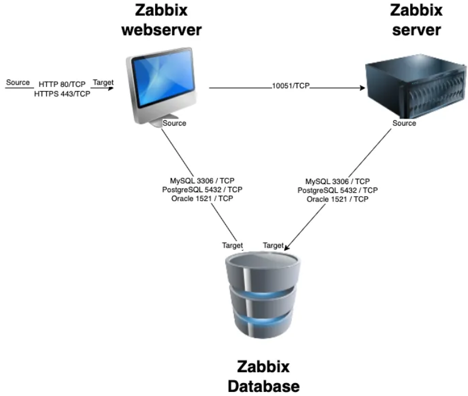
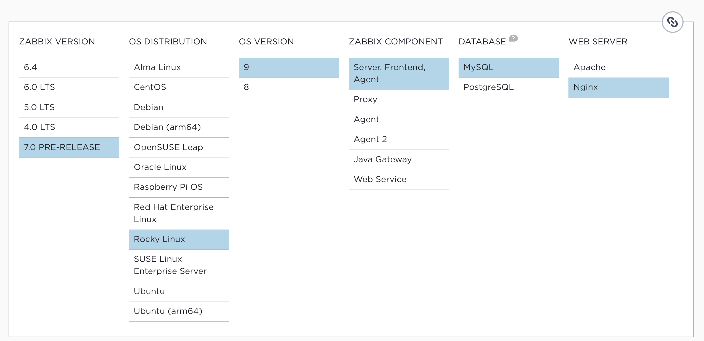
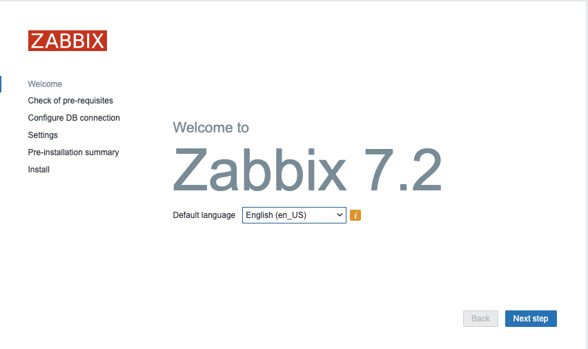
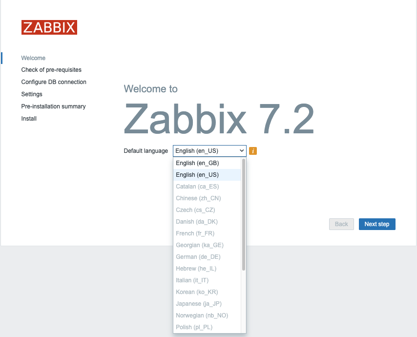
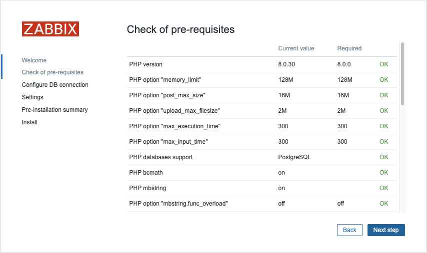
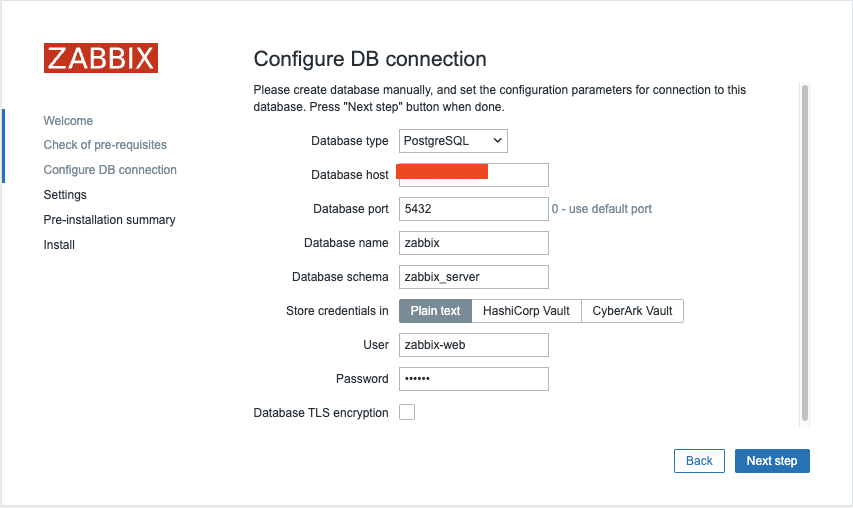
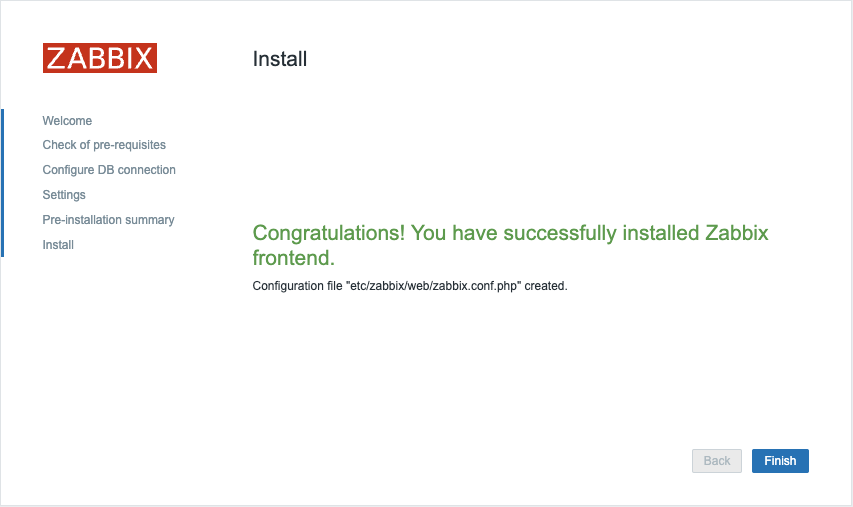

Basic installation¶
In this chapter, we will walk through the process of installing the Zabbix server. There are many different ways to setup a Zabbix server. We will cover the most common setups with MariaDB and PostgreSQL on Ubuntu and on Rocky Linux.
Before beginning the installation, it is important to understand the architecture of Zabbix. The Zabbix server is structured in a modular fashion, composed of three main components, which we will discuss in detail.
- The Zabbix server
- The Zabbix web server
- The Zabbix database

1.1 Zabbix basic split installationAll of these components can either be installed on a single server or distributed across three separate servers. The core of the system is the Zabbix server, often referred to as the "brain." This component is responsible for processing trigger calculations and sending alerts. The database serves as the storage for the Zabbix server's configuration and all the data it collects. The web server provides the user interface (front-end) for interacting with the system. It is important to note that the Zabbix API is part of the front-end component, not the Zabbix server itself.
These components must function together seamlessly, as illustrated in the diagram above. The Zabbix server must read configurations and store monitoring data in the database, while the front-end needs access to read and write configuration data. Furthermore, the front-end must be able to check the status of the Zabbix server and retrieve additional necessary information to ensure smooth operation.
For our setup, we will be using two virtual machines (VMs): one VM will host both the Zabbix server and the Zabbix web front-end, while the second VM will host the Zabbix database.
Note
It's perfect possible to install all components on 1 single VM or every component on a separate VM. Reason we split the DB as an example is because the database will probably be the first component giving you performance headaches. It's also the component that needs some extra attention when we split it so for this reason we have chosen in this example to split the database from the rest of the setup.
Note
A crucial consideration for those managing Zabbix installations is the database back-end. Zabbix 7.0 marks the final release to offer support for Oracle Database. Consequently, systems running Zabbix 7.0 or any prior version must undertake a database migration to either PostgreSQL, MySQL, or a compatible fork such as MariaDB before upgrading to a later Zabbix release. This migration is a mandatory step to ensure continued functionality and compatibility with future Zabbix versions.
We will cover the following topics:
- Install our Database based on MariaDB.
- Install our Database based on PostgreSQL.
- Installing the Zabbix server.
- Install the frontend.
Installing the MariaDB database¶
To begin the installation process for the MariaDB server, the first step involves manually creating a repository configuration file. This file, mariadb.repo on Rocky, must be placed in the /etc/yum.repos.d/ directory. The repository file will allow your package manager to locate and install the necessary MariaDB components. For Ubuntu we need to import the repository keys and create a file for example '/etc/apt/sources.list.d/mariadb.sources'.
Add the MariaDB repository¶
To create the MariaDB repository file, execute the following command in your terminal:
RedHat
# vi /etc/yum.repos.d/mariadb.repo
Ubuntu
# sudo apt-get install apt-transport-https curl
# sudo mkdir -p /etc/apt/keyrings
# sudo curl -o /etc/apt/keyrings/mariadb-keyring.pgp 'https://mariadb.org/mariadb_release_signing_key.pgp'
# sudo vi /etc/apt/sources.list.d/mariadb.sources
This will open a text editor where you can input the repository configuration details. Once the repository is configured, you can proceed with the installation of MariaDB using your package manager.
Tip
Always check Zabbix documentation for the latest supported versions.
The latest config can be found here: https://mariadb.org/download/?t=repo-config
Here's the configuration you need to add into the file:
RedHat
# MariaDB 11.4 RedHatEnterpriseLinux repository list - created 2025-02-21 10:15 UTC
# https://mariadb.org/download/
[mariadb]
name = MariaDB
# rpm.mariadb.org is a dynamic mirror if your preferred mirror goes offline. See https://mariadb.org/mirrorbits/ for details.
# baseurl = https://rpm.mariadb.org/11.4/rhel/$releasever/$basearch
baseurl = https://mirror.bouwhuis.network/mariadb/yum/11.4/rhel/$releasever/$basearch
# gpgkey = https://rpm.mariadb.org/RPM-GPG-KEY-MariaDB
gpgkey = https://mirror.bouwhuis.network/mariadb/yum/RPM-GPG-KEY-MariaDB
gpgcheck = 1
Ubuntu
# MariaDB 11.4 repository list - created 2025-02-21 11:42 UTC
# https://mariadb.org/download/
X-Repolib-Name: MariaDB
Types: deb
# deb.mariadb.org is a dynamic mirror if your preferred mirror goes offline. See https://mariadb.org/mirrorbits/ for details.
# URIs: https://deb.mariadb.org/11.4/ubuntu
URIs: https://mirror.bouwhuis.network/mariadb/repo/11.4/ubuntu
Suites: noble
Components: main main/debug
Signed-By: /etc/apt/keyrings/mariadb-keyring.pgp
After saving the file, ensure that everything is properly set up and that your MariaDB version is compatible with your Zabbix version to avoid potential integration issues.
Before proceeding with the MariaDB installation, it's a best practice to ensure your operating system is up-to-date with the latest patches and security fixes. This will help maintain system stability and compatibility with the software you're about to install.
To update your OS, run the following command:
RedHat
# dnf update -y
Ubuntu
# sudo apt update -y && sudo apt upgrade -y
This command will automatically fetch and install the latest updates available for your system, applying security patches, performance improvements, and bug fixes. Once the update process is complete, you can move forward with the MariaDB installation.
Install the MariaDB database¶
With the operating system updated and the MariaDB repository configured, you are now ready to install the MariaDB server and client packages. This will provide the necessary components to run and manage your database.
To install the MariaDB server and client, execute the following command:
RedHat
# dnf install MariaDB-server
Ubuntu
# sudo apt-get install mariadb-server
This command will download and install both the server and client packages, enabling you to set up, configure, and interact with your MariaDB database. Once the installation is complete, you can proceed to start and configure the MariaDB service.
Now that MariaDB is installed, we need to enable the service to start automatically upon boot and start it immediately. Use the following command to accomplish this:
RedHat
# systemctl enable mariadb --now
This command will both enable and start the MariaDB service. Once the service is running, you can verify that the installation was successful by checking the version of MariaDB using the following command:
RedHat and Ubuntu
# sudo mariadb -V
The expected output should resemble this:
mariadb from 11.4.5-MariaDB, client 15.2 for Linux (aarch64) using EditLine wrapper
To ensure that the MariaDB service is running properly, you can check its status with the following command:
RedHat and Ubuntu
# sudo systemctl status mariadb
You should see an output similar to this, indicating that the MariaDB service is active and running:
mariadb.service - MariaDB 11.4.5 database server
Loaded: loaded (/usr/lib/systemd/system/mariadb.service; enabled; preset: disabled)
Drop-In: /etc/systemd/system/mariadb.service.d
└─migrated-from-my.cnf-settings.conf
Active: active (running) since Fri 2025-02-21 11:22:59 CET; 2min 8s ago
Docs: man:mariadbd(8)
https://mariadb.com/kb/en/library/systemd/
Process: 23147 ExecStartPre=/bin/sh -c systemctl unset-environment _WSREP_START_POSITION (code=exited, status=0/SUCCESS)
Process: 23148 ExecStartPre=/bin/sh -c [ ! -e /usr/bin/galera_recovery ] && VAR= || VAR=`/usr/bin/galera_recovery`; [ $? -eq 0 ] && systemctl set-enviro>
Process: 23168 ExecStartPost=/bin/sh -c systemctl unset-environment _WSREP_START_POSITION (code=exited, status=0/SUCCESS)
Main PID: 23156 (mariadbd)
Status: "Taking your SQL requests now..."
Tasks: 7 (limit: 30620)
Memory: 281.7M
CPU: 319ms
CGroup: /system.slice/mariadb.service
└─23156 /usr/sbin/mariadbd
Feb 21 11:22:58 localhost.localdomain mariadbd[23156]: 2025-02-21 11:22:58 0 [Note] InnoDB: Loading buffer pool(s) from /var/lib/mysql/ib_buffer_pool
Feb 21 11:22:58 localhost.localdomain mariadbd[23156]: 2025-02-21 11:22:58 0 [Note] Plugin 'FEEDBACK' is disabled.
Feb 21 11:22:58 localhost.localdomain mariadbd[23156]: 2025-02-21 11:22:58 0 [Note] Plugin 'wsrep-provider' is disabled.
Feb 21 11:22:58 localhost.localdomain mariadbd[23156]: 2025-02-21 11:22:58 0 [Note] InnoDB: Buffer pool(s) load completed at 250221 11:22:58
Feb 21 11:22:58 localhost.localdomain mariadbd[23156]: 2025-02-21 11:22:58 0 [Note] Server socket created on IP: '0.0.0.0'.
Feb 21 11:22:58 localhost.localdomain mariadbd[23156]: 2025-02-21 11:22:58 0 [Note] Server socket created on IP: '::'.
Feb 21 11:22:58 localhost.localdomain mariadbd[23156]: 2025-02-21 11:22:58 0 [Note] mariadbd: Event Scheduler: Loaded 0 events
Feb 21 11:22:58 localhost.localdomain mariadbd[23156]: 2025-02-21 11:22:58 0 [Note] /usr/sbin/mariadbd: ready for connections.
Feb 21 11:22:58 localhost.localdomain mariadbd[23156]: Version: '11.4.5-MariaDB' socket: '/var/lib/mysql/mysql.sock' port: 3306 MariaDB Server
Feb 21 11:22:59 localhost.localdomain systemd[1]: Started MariaDB 11.4.5 database server.
This confirms that your MariaDB server is up and running, ready for further configuration.
Securing the MariaDB Database¶
To enhance the security of your MariaDB server, it's essential to remove unnecessary test databases, anonymous users, and set a root password. This can be done using the mariadb-secure-installation script, which provides a step-by-step guide to securing your database.
Run the following command:
RedHat and Ubuntu
# sudo mariadb-secure-installation
NOTE: RUNNING ALL PARTS OF THIS SCRIPT IS RECOMMENDED FOR ALL MariaDB
SERVERS IN PRODUCTION USE! PLEASE READ EACH STEP CAREFULLY!
In order to log into MariaDB to secure it, we'll need the current
password for the root user. If you've just installed MariaDB, and
haven't set the root password yet, you should just press enter here.
Enter current password for root (enter for none):
OK, successfully used password, moving on...
Setting the root password or using the unix_socket ensures that nobody
can log into the MariaDB root user without the proper authorisation.
You already have your root account protected, so you can safely answer 'n'.
Switch to unix_socket authentication [Y/n] n
... skipping.
You already have your root account protected, so you can safely answer 'n'.
Change the root password? [Y/n] y
New password:
Re-enter new password:
Password updated successfully!
Reloading privilege tables..
... Success!
By default, a MariaDB installation has an anonymous user, allowing anyone
to log into MariaDB without having to have a user account created for
them. This is intended only for testing, and to make the installation
go a bit smoother. You should remove them before moving into a
production environment.
Remove anonymous users? [Y/n] y
... Success!
Normally, root should only be allowed to connect from 'localhost'. This
ensures that someone cannot guess at the root password from the network.
Disallow root login remotely? [Y/n] y
... Success!
By default, MariaDB comes with a database named 'test' that anyone can
access. This is also intended only for testing, and should be removed
before moving into a production environment.
Remove test database and access to it? [Y/n] y
- Dropping test database...
... Success!
- Removing privileges on test database...
... Success!
Reloading the privilege tables will ensure that all changes made so far
will take effect immediately.
Reload privilege tables now? [Y/n] y
... Success!
Cleaning up...
All done! If you've completed all of the above steps, your MariaDB
installation should now be secure.
Thanks for using MariaDB!
The mariadb-secure-installation script will guide you through several key steps:
- Set a root password if one isn't already set.
- Remove anonymous users.
- Disallow remote root logins.
- Remove the test database.
- Reload the privilege tables to ensure the changes take effect.
Once complete, your MariaDB instance will be significantly more secure. You are now ready to configure the database for Zabbix.
Create the Zabbix database¶
With MariaDB now set up and secured, we can move on to creating the database for Zabbix. This database will store all the necessary data related to your Zabbix server, including configuration information and monitoring data.
Follow these steps to create the Zabbix database:
Log in to the MariaDB shell as the root user: You'll be prompted to enter the root password that you set during the mariadb-secure-installation process.
RedHat and Ubuntu
# mariadb -uroot -p
Once you're logged into the MariaDB shell, run the following command to create a database for Zabbix:
MariaDB [(none)]> CREATE DATABASE zabbix CHARACTER SET utf8mb4 COLLATE utf8mb4_bin;
Note
utf8mb4 is a proper implementation of UTF-8 in MySQL/MariaDB, supporting all Unicode characters, including emojis. The older utf8 charset in MySQL/MariaDB only supports up to three bytes per character and is not a true UTF-8 implementation, which is why utf8mb4 is recommended.
This command creates a new database named zabbix with the UTF-8 character set, which is required for Zabbix.
Create a dedicated user for Zabbix and grant the necessary privileges: Next, you need to create a user that Zabbix will use to access the database. Replace password with a strong password of your choice.
MariaDB [(none)]> CREATE USER 'zabbix-web'@'<zabbix server ip>' IDENTIFIED BY '<password>';
MariaDB [(none)]> CREATE USER 'zabbix-srv'@'<zabbix server ip>' IDENTIFIED BY '<password>';
MariaDB [(none)]> GRANT ALL PRIVILEGES ON zabbix.* TO 'zabbix-srv'@'<zabbix server ip>';
MariaDB [(none)]> GRANT SELECT, UPDATE, DELETE, INSERT ON zabbix.* TO 'zabbix-web'@'<zabbix server ip>';
MariaDB [(none)]> FLUSH PRIVILEGES;
This creates new users for zabbix-web and zabbix-srv, grants them access to the zabbix database, and ensures that the privileges are applied immediately.
In some cases, especially when setting up Zabbix with MariaDB, you might encounter issues related to stored functions and triggers if binary logging is enabled. To address this, you need to set the log_bin_trust_function_creators option to 1 in the MariaDB configuration file. This allows non-root users to create stored functions and triggers without requiring SUPER privileges, which are restricted when binary logging is enabled.
MariaDB [(none)]> SET GLOBAL log_bin_trust_function_creators = 1;
MariaDB [(none)]> QUIT
At this point, your Zabbix database is ready, and you can proceed with configuring the Zabbix server to connect to the database.
Warning
In the Zabbix documentation, it is explicitly stated that deterministic triggers need to be created during the schema import. On MySQL and MariaDB systems, this requires setting GLOBAL log_bin_trust_function_creators = 1 if binary logging is enabled, and you lack superuser privileges.
If the log_bin_trust_function_creators option is not set in the MySQL configuration file, it will block the creation of these triggers during schema import. This is essential because, without superuser access, non-root users cannot create triggers or stored functions unless this setting is applied.
To summarize:
-
Binary logging enabled: If binary logging is enabled and the user does not have superuser privileges, the creation of necessary Zabbix triggers will fail unless log_bin_trust_function_creators = 1 is set.
-
Solution: Add log_bin_trust_function_creators = 1 to the [mysqld] section in your MySQL/MariaDB configuration file or temporarily set it at runtime with SET GLOBAL log_bin_trust_function_creators = 1 if you have sufficient permissions.
This ensures that Zabbix can successfully create the required triggers during schema import without encountering privilege-related errors.
If we want our Zabbix server to connect to our DB then we also need to open our firewall port.
RedHat
# firewall-cmd --add-port=3306/tcp --permanent
# firewall-cmd --reload
Ubuntu
# sudo ufw allow 3306/tcp
Populate the Zabbix DB¶
With the users and permissions set up correctly, you can now populate the database with the Zabbix schema created and other required elements. Follow these steps:
One of the first things we need to do is add the Zabbix repository to our machine. This may sound weird but actually makes sense because we need to populate our DB with our Zabbix schemas.
RedHat
# rpm -Uvh https://repo.zabbix.com/zabbix/7.2/release/rocky/9/noarch/zabbix-release-latest-7.2.el9.noarch.rpm
# dnf clean all
# dnf install zabbix-sql-scripts -y
Ubuntu
# sudo wget https://repo.zabbix.com/zabbix/7.2/release/ubuntu/pool/main/z/zabbix-release/zabbix-release_latest_7.2+ubuntu24.04_all.deb
# sudo dpkg -i zabbix-release_latest_7.2+ubuntu24.04_all.deb
# sudo apt update
# sudo apt install zabbix-sql-scripts
Now lets upload the data from zabbix (db structure, images, user, ... )
for this we make use of the user zabbix-srv and we upload it all in our DB zabbix.
RedHat and Ubuntu
# sudo zcat /usr/share/zabbix/sql-scripts/mysql/server.sql.gz | mariadb --default-character-set=utf8mb4 -uroot -p zabbix
Note
Depending on the speed of your hardware or virtual machine, the process may take anywhere from a few seconds to several minutes. Please be patient and avoid cancelling the operation; just wait for the prompt to appear.
Log back into your MySQL Database as root
# mariadb -uroot -p
Once the import of the Zabbix schema is complete and you no longer need the log_bin_trust_function_creators global parameter, it is a good practice to remove it for security reasons.
To revert the change and set the global parameter back to 0, use the following command in the MariaDB shell:
mysql> SET GLOBAL log_bin_trust_function_creators = 0;
Query OK, 0 rows affected (0.001 sec)
This command will disable the setting, ensuring that the servers security posture remains robust.
This concludes our installation of the MariaDB
Installing the PostgreSQL database¶
For our DB setup with PostgreSQL we need to add our PostgreSQL repository first to the system. As of writing PostgreSQL 13-17 are supported but best is to have a look before you install it as new versions may be supported and older maybe unsupported both by Zabbix and PostgreSQL. Usually it's a good idea to go with the latest version that is supported by Zabbix. Zabbix also supports the extension TimescaleDB this is something we will talk later about. As you will see the setup from PostgreSQL is very different from MySQL not only the installation but also securing the DB.
The table of compatibility can be found https://docs.timescale.com/self-hosted/latest/upgrades/upgrade-pg/
Add the PostgreSQL repository¶
So let us start first setting up our PostgreSQL repository with the following commands.
RedHat
Install the repository RPM:
# sudo dnf install -y https://download.postgresql.org/pub/repos/yum/reporpms/EL-9-x86_64/pgdg-redhat-repo-latest.noarch.rpm
Disable the built-in PostgreSQL module:
# sudo dnf -qy module disable postgresql
Ubuntu
# Import the repository signing key:
sudo apt install curl ca-certificates
sudo install -d /usr/share/postgresql-common/pgdg
sudo curl -o /usr/share/postgresql-common/pgdg/apt.postgresql.org.asc --fail https://www.postgresql.org/media/keys/ACCC4CF8.asc
# Create the repository configuration file:
sudo sh -c 'echo "deb [signed-by=/usr/share/postgresql-common/pgdg/apt.postgresql.org.asc] https://apt.postgresql.org/pub/repos/apt $(lsb_release -cs)-pgdg main" > /etc/apt/sources.list.d/pgdg.list'
# Update the package lists:
sudo apt update
Install the PostgreSQL databases¶
RedHat
# Install PostgreSQL:
sudo dnf install -y postgresql17-server
Initialize the database and enable automatic start:
# sudo /usr/pgsql-17/bin/postgresql-17-setup initdb
# sudo systemctl enable postgresql-17 --now
Ubuntu
sudo apt -y install postgresql-17
To update your OS, run the following command:
RedHat
# dnf update -y
Ubuntu
# sudo apt update -y && sudo apt upgrade -y
Securing the PostgreSQL database¶
PostgreSQL handles access permissions differently from MySQL and MariaDB. PostgreSQL relies on a file called pg_hba.conf to manage who can access the database, from where, and what encryption method is used for authentication.
Note
Client authentication in PostgreSQL is configured through the pg_hba.conf file, where "HBA" stands for Host-Based Authentication. This file specifies which users can access the database, from which hosts, and how they are authenticated. For further details, you can refer to the official PostgreSQL documentation." https://www.postgresql.org/docs/current/auth-pg-hba-conf.html
Add the following lines, the order here is important.
Redhat
# vi /var/lib/pgsql/17/data/pg_hba.conf
Ubuntu
# sudo vi /etc/postgresql/17/main/pg_hba.conf
The result should look like :
# "local" is for Unix domain socket connections only
local zabbix zabbix-srv scram-sha-256
local all all peer
# IPv4 local connections
host zabbix zabbix-srv <ip from zabbix server/24> scram-sha-256
host zabbix zabbix-web <ip from zabbix server/24> scram-sha-256
host all all 127.0.0.1/32 scram-sha-256
After we changed the pg_hba file don't forget to restart postgres else the settings will not be applied. But before we restart let us also edit the file postgresql.conf and allow our database to listen on our network interface for incoming connections from the zabbix server. Postgresql will standard only allow connections from the socket.
RedHat
# vi /var/lib/pgsql/17/data/postgresql.conf
Ubuntu
# vi /etc/postgresql/17/main/postgresql.conf
To configure PostgreSQL to listen on all network interfaces, you need to modify
the postgresql.conf file. Locate the following line:
#listen_addresses = 'localhost'
and replace it with:
listen_addresses = '*'
This will enable PostgreSQL to accept connections from any network interface, not just the local machine. In production it's probably a good idea to limit who can connect to the DB. After making this change, restart the PostgreSQL service to apply the new settings:
Redhat
# systemctl restart postgresql-17
Ubuntu
sudo systemctl restart postgresql
If the service fails to restart, review the pg_hba.conf file for any syntax errors, as incorrect entries here may prevent PostgreSQL from starting.
Next, to prepare your PostgreSQL instance for Zabbix, you'll need to create the necessary database tables. Begin by installing the Zabbix repository, as you did for the Zabbix server. Then, install the appropriate Zabbix package that contains the predefined tables, images, icons, and other database elements needed for the Zabbix application.
Create the Zabbix database¶
To begin, add the Zabbix repository to your system by running the following commands:
RedHat
# dnf install https://repo.zabbix.com/zabbix/7.2/release/rocky/9/noarch/zabbix-release-latest-7.2.el9.noarch.rpm -y
# dnf install zabbix-sql-scripts -y
Ubuntu
# sudo wget https://repo.zabbix.com/zabbix/7.2/release/ubuntu/pool/main/z/zabbix-release/zabbix-release_latest_7.2+ubuntu24.04_all.deb
# sudo dpkg -i zabbix-release_latest_7.2+ubuntu24.04_all.deb
# sudo apt update -y
# sudo apt install zabbix-sql-scripts -y
With the necessary packages installed, you are now ready to create the Zabbix users for both the server and frontend.
First, switch to the postgres user and create the Zabbix server database user:
# sudo su - postgres
# createuser --pwprompt zabbix-srv
Enter password for new role: <server-password>
Enter it again: <server-password>
Next, create the Zabbix frontend user, which will be used to connect to the database:
# createuser --pwprompt zabbix-web
Enter password for new role: <frontend-password>
Enter it again: <frontend-password>
After creating the users, you need to prepare the database schema. As the root or your regular user, unzip the necessary schema files by running the following command:
RedHat
# gzip -d /usr/share/zabbix/sql-scripts/postgresql/server.sql.gz
Ubuntu
# sudo gzip -d /usr/share/zabbix/sql-scripts/postgresql/server.sql.gz
Note
Zabbix seems to like to change the locations of the script to populate the DB every version or in between versions. If you encounter an error take a look at the Zabbix documentation there is a good chance that some location was changed.
This will extract the database schema required for the Zabbix server.
Now that the users are created, the next step is to create the Zabbix database.
First, switch to the postgres user and execute the following command to create
the database with the owner set to zabbix-srv:
RedHat
# su - postgres
# createdb -E Unicode -O zabbix-srv zabbix
# exit
Ubuntu
# sudo su - postgres
# createdb -E Unicode -O zabbix-srv zabbix
# exit
Once the database is created, you should verify the connection and ensure that the correct user session is active. To do this, log into the zabbix database using the zabbix-srv user:
# psql -d zabbix -U zabbix-srv
After logging in, run the following SQL query to confirm that both the session_user
and current_user are set to zabbix-srv:
zabbix=> SELECT session_user, current_user;
session_user | current_user
--------------+--------------
zabbix-srv | zabbix-srv
(1 row)
If the output matches, you are successfully connected to the database with the correct user.
PostgreSQL indeed differs significantly from MySQL or MariaDB in several aspects, and one of the key features that sets it apart is its use of schemas. Unlike MySQL, where databases are more standalone, PostgreSQL's schema system provides a structured, multi-user environment within a single database.
Schemas act as logical containers within a database, enabling multiple users or applications to access and manage data independently without conflicts. This feature is especially valuable in environments where several users or applications need to interact with the same database concurrently. Each user or application can have its own schema, preventing accidental interference with each other's data.
Note
PostgreSQL comes with a default schema, typically called public, but it's in general best practice to create custom schemas to better organize and separate database objects, especially in complex or multi-user environments.
For more in-depth information, I recommend checking out the detailed guide at this URI, https://hevodata.com/learn/postgresql-schema/#schema which explains the benefits and use cases for schemas in PostgreSQL.
To finalize the database setup for Zabbix, we need to configure schema permissions
for both the zabbix-srv and zabbix-web users.
First, we create a custom schema named zabbix_server and assign ownership to
the zabbix-srv user:
zabbix=> CREATE SCHEMA zabbix_server AUTHORIZATION "zabbix-srv";
Next, we set the search path to zabbix_server schema so that it's the default
for the current session:
zabbix=> SET search_path TO "zabbix_server";
To confirm the schema setup, you can list the existing schemas:
zabbix=> \dn
List of schemas
Name | Owner
---------------+-------------------
public | pg_database_owner
zabbix_server | zabbix-srv
(2 rows)
At this point, the zabbix-srv user has full access to the schema, but the zabbix-web
user still needs appropriate permissions to connect and interact with the database.
First, we grant USAGE privileges on the schema to allow zabbix-web to connect:
zabbix=# GRANT USAGE ON SCHEMA zabbix_server TO "zabbix-web";
However, zabbix-web still cannot perform any operations on the tables or sequences.
To allow basic data interaction without giving too many privileges, grant the
following permissions:
- For tables: SELECT, INSERT, UPDATE, and DELETE.
- For sequences: SELECT and UPDATE.
zabbix=# GRANT SELECT, INSERT, UPDATE, DELETE ON ALL TABLES IN SCHEMA zabbix_server TO "zabbix-web";
zabbix=# GRANT SELECT, UPDATE ON ALL SEQUENCES IN SCHEMA zabbix_server TO "zabbix-web";
Populate the Zabbix DB¶
Now, the zabbix-web user has appropriate access to interact with the schema
while maintaining security by limiting permissions to essential operations.
With the users and permissions set up correctly, you can now populate the database with the Zabbix schema created and other required elements. Follow these steps:
- Execute the SQL file to populate the database. Run the following command in the
psqlshell:
Warning
Make sure you did previous steps carefully so that you have selected the correct search_path.
sql zabbix=# \i /usr/share/zabbix/sql-scripts/postgresql/server.sql
Warning
Depending on your hardware or VM performance, this process can take anywhere from a few seconds to several minutes. Please be patient and avoid cancelling the operation.
- Monitor the progress as the script runs. You will see output similar to:
zabbix=> \i /usr/share/zabbix/sql-scripts/postgresql/server.sql
CREATE TABLE
CREATE INDEX
CREATE TABLE
CREATE INDEX
CREATE TABLE
...
...
...
INSERT 0 10444
DELETE 90352
COMMIT
Once the script completes and you return to the zabbix=# prompt, the database
should be successfully populated with all the required tables, schemas,
images, and other elements needed for Zabbix.
Note
If you encounter the following error during the SQL import:
vbnet psql:/usr/share/zabbix/sql-scripts/postgresql/server.sql:7: ERROR: no
schema has been selected to create in It indicates that the search_path setting
might not have been correctly applied. This setting is crucial because it specifies
the schema where the tables and other objects should be created. By correctly
setting the search path, you ensure that the SQL script will create tables
and other objects in the intended schema.
To ensure that the Zabbix tables were created successfully and have the correct
permissions, you can verify the table list and their ownership using the psql command:
- List the Tables: Use the following command to list all tables in the
zabbix_serverschema:
sql zabbix=# \dt
You should see a list of tables with their schema, name, type, and owner. For example:
zabbix=> \dt
List of relations
Schema | Name | Type | Owner
---------------+----------------------------+-------+------------
zabbix_server | acknowledges | table | zabbix-srv
zabbix_server | actions | table | zabbix-srv
zabbix_server | alerts | table | zabbix-srv
zabbix_server | auditlog | table | zabbix-srv
zabbix_server | autoreg_host | table | zabbix-srv
zabbix_server | changelog | table | zabbix-srv
zabbix_server | conditions | table | zabbix-srv
...
...
...
zabbix_server | valuemap | table | zabbix-srv
zabbix_server | valuemap_mapping | table | zabbix-srv
zabbix_server | widget | table | zabbix-srv
zabbix_server | widget_field | table | zabbix-srv
(203 rows)
- Verify Permissions: Confirm that the zabbix-srv user owns the tables and has the necessary permissions. You can check permissions for specific tables using the \dp command:
sql zabbix=# \dp zabbix_server.*
This will display the access privileges for all tables in the zabbix_server
schema. Ensure that zabbix-srv has the required privileges.
If everything looks correct, your tables are properly created and the zabbix-srv
user has the appropriate ownership and permissions. If you need to adjust any
permissions, you can do so using the GRANT commands as needed.
Note
If you prefer not to set the search path manually each time you log in as the
zabbix-srv user, you can configure PostgreSQL to automatically use the desired
search path. Run the following SQL command to set the default search path for
the zabbix-srv role:
sql zabbix=> ALTER ROLE "zabbix-srv" SET search_path = "$user", public, zabbix_server;
This command ensures that every time the zabbix-srv user connects to the
database, the search_path is automatically set to include $user, public, and zabbix_server.
If you are ready you can exit the database and return as user root.
zabbix=> \q
If we want our Zabbix server to be able to connect to our DB then we also need to open our firewall port.
RedHat
# firewall-cmd --add-port=5432/tcp --permanent
# firewall-cmd --reload
Ubuntu
# sudo ufw allow 5432/tcp
Note
Make sure your DB is listening on the correct IP and not on 127.0.0.1. You could add the following files to your config file. This would allow MariaDB to listen on all interfaces. Best to limit it only to the needed IP.
/etc/mysql/mariadb.cnf
[mariadb] log_error=/var/log/mysql/mariadb.err log_warnings=3 bind-address = 0.0.0.0
This concludes our installation of the PostgreSQL database.
Installing the Zabbix server for MariaDB/Mysql¶
Before proceeding with the installation of your Zabbix server, ensure that the server is properly configured, as outlined in the previous section System Requirements
Another critical step at this stage if you use RedHat based systems is disabling SELinux, which can interfere with the installation and operation of Zabbix. We will revisit SELinux at the end of this chapter once our installation is finished.
To check the current status of SELinux, you can use the following command: `sestatus``
# sestatus
SELinux status: enabled
SELinuxfs mount: /sys/fs/selinux
SELinux root directory: /etc/selinux
Loaded policy name: targeted
Current mode: enforcing
Mode from config file: enforcing
Policy MLS status: enabled
Policy deny_unknown status: allowed
Memory protection checking: actual (secure)
Max kernel policy version: 33
As shown, the system is currently in enforcing mode. To temporarily disable SELinux,
you can run the following command: setenforce 0
# setenforce 0
# sestatus
SELinux status: enabled
SELinuxfs mount: /sys/fs/selinux
SELinux root directory: /etc/selinux
Loaded policy name: targeted
Current mode: permissive
Mode from config file: enforcing
Policy MLS status: enabled
Policy deny_unknown status: allowed
Memory protection checking: actual (secure)
Max kernel policy version: 33
Now, as you can see, the mode is switched to permissive. However, this change
is not persistent across reboots. To make it permanent, you need to modify the
SELinux configuration file located at /etc/selinux/config. Open the file and
replace enforcing with permissive.
Alternatively, you can achieve the same result more easily by running the following command:
RedHat
# sed -i 's/SELINUX=enforcing/SELINUX=permissive/g' /etc/selinux/config
This line will alter the configuration file for you. So when we run sestatus
again we will see that we are in permissive mode and that our configuration
file is also in permissive mode.
# sestatus
SELinux status: enabled
SELinuxfs mount: /sys/fs/selinux
SELinux root directory: /etc/selinux
Loaded policy name: targeted
Current mode: permissive
Mode from config file: permissive
Policy MLS status: enabled
Policy deny_unknown status: allowed
Memory protection checking: actual (secure)
Max kernel policy version: 33
Adding the Zabbix repository¶
From the Zabbix Download page https://www.zabbix.com/download, select the appropriate Zabbix version you wish to install. In this case, we will be using Zabbix 8.0 LTS. Additionally, ensure you choose the correct OS distribution for your environment, which will be Rocky Linux 9 or Ubuntu 24.04 in our case.
We will be installing the Zabbix Server along with NGINX as the web server for the front-end. Make sure to download the relevant packages for your chosen configuration.

If you make use of a RHEL based system like Rocky then the first step is to disable
the Zabbix packages provided by the EPEL repository, if it's installed on your system.
To do this, edit the /etc/yum.repos.d/epel.repo file and add the following statement
to disable the EPEL repository by default:
RedHat
[epel]
...
excludepkgs=zabbix*
Tip
It's considered bad practice to keep the EPEL repository enabled all the time,
as it may cause conflicts by unintentionally overwriting or installing unwanted
packages. Instead, it's safer to enable the repository only when needed, by using
the following command during installations: dnf install --enablerepo=epel
Next, we will install the Zabbix repository on our operating system. After adding the Zabbix repository, it is recommended to perform a repository cleanup to remove old cache files and ensure the repository metadata is up to date. You can do this by running:
RedHat
# rpm -Uvh https://repo.zabbix.com/zabbix/7.2/release/rocky/9/noarch/zabbix-release-latest-7.2.el9.noarch.rpm
# dnf clean all
Ubuntu
# sudo wget https://repo.zabbix.com/zabbix/7.2/release/ubuntu/pool/main/z/zabbix-release/zabbix-release_latest_7.2+ubuntu24.04_all.deb
# sudo dpkg -i zabbix-release_latest_7.2+ubuntu24.04_all.deb
# sudo apt update
This will refresh the repository metadata and prepare the system for Zabbix installation.
Note
A repository in Linux is a configuration that allows you to access and install software packages. You can think of it like an "app store" where you find and download software from a trusted source, in this case, the Zabbix repository. Many repositories are available, but it's important to only add those you trust. The safest practice is to stick to the repositories provided by your operating system and only add additional ones when you're sure they are both trusted and necessary.
For our installation, the Zabbix repository is provided by the vendor itself, making it a trusted source. Another popular and safe repository for RedHat-based systems is EPEL (Extra Packages for Enterprise Linux), which is commonly used in enterprise environments. However, always exercise caution when adding new repositories to ensure system security and stability.
Configuring the Zabbix server for MySQL/MariaDB¶
Now that we've added the Zabbix repository with the necessary software, we are ready to install both the Zabbix server and the web server. Keep in mind that the web server doesn't need to be installed on the same machine as the Zabbix server; they can be hosted on separate systems if desired.
To install the Zabbix server and the web server components for MySQL/MariaDB, run the following command:
RedHat
# dnf install zabbix-server-mysql -y
Ubuntu
# sudo apt install zabbix-server-mysql
After successfully installing the Zabbix server and frontend packages, we need to
configure the Zabbix server to connect to the database. This requires modifying the
Zabbix server configuration file. Open the /etc/zabbix/zabbix_server.conf file and
update the following lines to match your database configuration:
RedHat and Ubuntu
sudo vi /etc/zabbix/zabbix_server.conf
DBHost=<database-host>
DBName=<database-name>
DBUser=<database-user>
DBPassword=<database-password>
Replace
Ensure that there is no # (comment symbol) in front of the configuration parameters, as Zabbix will treat lines beginning with # as comments, ignoring them during execution. Additionally, double-check for duplicate configuration lines; if there are multiple lines with the same parameter, Zabbix will use the value from the last occurrence.
For our setup, the configuration will look like this:
DBHost=<ip or dns of your MariaDB server>
DBName=zabbix
DBUser=zabbix-srv
DBPassword=<your super secret password>
DBPort=3306
In this example:
- DBHost refers to the host where your database is running (use localhost if it's on the same machine).
- DBName is the name of the Zabbix database.
- DBUser is the database user.
- DBPassword is the password for the database user.
Make sure the settings reflect your environment's database configuration.
Note
The Zabbix server configuration file offers an option to include additional configuration files for custom parameters. For a production environment, it's often best to avoid altering the original configuration file directly. Instead, you can create and include a separate configuration file for any additional or modified parameters. This approach ensures that your original configuration file remains untouched, which is particularly useful when performing upgrades or managing configurations with tools like Ansible, Puppet, or SaltStack.
To enable this feature, remove the # from the line:
# Include=/usr/local/etc/zabbix_server.conf.d/*.conf
Ensure the path /usr/local/etc/zabbix_server.conf.d/ exists and
create a custom configuration file in this directory.
This file should be readable by the zabbix user. By doing so, you can add
or modify parameters without modifying the default configuration file,
making system management and upgrades smoother.
With the Zabbix server configuration updated to connect to your database, you can now start and enable the Zabbix server service. Run the following command to enable the Zabbix server and ensure it starts automatically on boot:
Redhat and Ubuntu
# sudo systemctl enable zabbix-server --now
This command will start the Zabbix server service immediately and configure it
to launch on system startup. To verify that the Zabbix server is running correctly,
check the log file for any messages. You can view the latest entries in the Zabbix server
log file using:
tail /var/log/zabbix/zabbix_server.log
Look for messages indicating that the server has started successfully. If there are any issues, the log file will provide details to help with troubleshooting.
12074:20250225:145333.529 Starting Zabbix Server. Zabbix 7.2.4 (revision c34078a4563).
12074:20250225:145333.530 ****** Enabled features ******
12074:20250225:145333.530 SNMP monitoring: YES
12074:20250225:145333.530 IPMI monitoring: YES
12074:20250225:145333.530 Web monitoring: YES
12074:20250225:145333.530 VMware monitoring: YES
12074:20250225:145333.530 SMTP authentication: YES
12074:20250225:145333.530 ODBC: YES
12074:20250225:145333.530 SSH support: YES
12074:20250225:145333.530 IPv6 support: YES
12074:20250225:145333.530 TLS support: YES
12074:20250225:145333.530 ******************************
12074:20250225:145333.530 using configuration file: /etc/zabbix/zabbix_server.conf
12074:20250225:145333.545 current database version (mandatory/optional): 07020000/07020000
12074:20250225:145333.545 required mandatory version: 07020000
12075:20250225:145333.557 starting HA manager
12075:20250225:145333.566 HA manager started in active mode
12074:20250225:145333.567 server #0 started [main process]
12076:20250225:145333.567 server #1 started [service manager #1]
12077:20250225:145333.567 server #2 started [configuration syncer #1]
12078:20250225:145333.718 server #3 started [alert manager #1]
12079:20250225:145333.719 server #4 started [alerter #1]
12080:20250225:145333.719 server #5 started [alerter #2]
12081:20250225:145333.719 server #6 started [alerter #3]
12082:20250225:145333.719 server #7 started [preprocessing manager #1]
12083:20250225:145333.719 server #8 started [lld manager #1]
If there was an error and the server was not able to connect to the database you would see something like this in the server log file :
12068:20250225:145309.018 Starting Zabbix Server. Zabbix 7.2.4 (revision c34078a4563).
12068:20250225:145309.018 ****** Enabled features ******
12068:20250225:145309.018 SNMP monitoring: YES
12068:20250225:145309.018 IPMI monitoring: YES
12068:20250225:145309.018 Web monitoring: YES
12068:20250225:145309.018 VMware monitoring: YES
12068:20250225:145309.018 SMTP authentication: YES
12068:20250225:145309.018 ODBC: YES
12068:20250225:145309.018 SSH support: YES
12068:20250225:145309.018 IPv6 support: YES
12068:20250225:145309.018 TLS support: YES
12068:20250225:145309.018 ******************************
12068:20250225:145309.018 using configuration file: /etc/zabbix/zabbix_server.conf
12068:20250225:145309.027 [Z3005] query failed: [1146] Table 'zabbix.users' doesn't exist [select userid from users limit 1]
12068:20250225:145309.027 cannot use database "zabbix": database is not a Zabbix database
Let's check the Zabbix server service to see if it's enabled so that it survives a reboot
# systemctl status zabbix-server
● zabbix-server.service - Zabbix Server
Loaded: loaded (/usr/lib/systemd/system/zabbix-server.service; enabled; preset: disabled)
Active: active (running) since Tue 2025-02-25 14:53:33 CET; 26min ago
Main PID: 12074 (zabbix_server)
Tasks: 77 (limit: 24744)
Memory: 71.5M
CPU: 18.535s
CGroup: /system.slice/zabbix-server.service
├─12074 /usr/sbin/zabbix_server -c /etc/zabbix/zabbix_server.conf
├─12075 "/usr/sbin/zabbix_server: ha manager"
├─12076 "/usr/sbin/zabbix_server: service manager #1 [processed 0 events, updated 0 event tags, deleted 0 problems, synced 0 service updates, idle 5.027667 sec during 5.042628 sec]"
├─12077 "/usr/sbin/zabbix_server: configuration syncer [synced configuration in 0.051345 sec, idle 10 sec]"
├─12078 "/usr/sbin/zabbix_server: alert manager #1 [sent 0, failed 0 alerts, idle 5.030391 sec during 5.031944 sec]"
├─12079 "/usr/sbin/zabbix_server: alerter #1 started"
├─12080 "/usr/sbin/zabbix_server: alerter #2 started"
├─12081 "/usr/sbin/zabbix_server: alerter #3 started"
├─12082 "/usr/sbin/zabbix_server: preprocessing manager #1 [queued 0, processed 0 values, idle 5.023818 sec during 5.024830 sec]"
├─12083 "/usr/sbin/zabbix_server: lld manager #1 [processed 0 LLD rules, idle 5.017278sec during 5.017574 sec]"
├─12084 "/usr/sbin/zabbix_server: lld worker #1 [processed 1 LLD rules, idle 21.031209 sec during 21.063879 sec]"
├─12085 "/usr/sbin/zabbix_server: lld worker #2 [processed 1 LLD rules, idle 43.195541 sec during 43.227934 sec]"
├─12086 "/usr/sbin/zabbix_server: housekeeper [startup idle for 30 minutes]"
├─12087 "/usr/sbin/zabbix_server: timer #1 [updated 0 hosts, suppressed 0 events in 0.017595 sec, idle 59 sec]"
├─12088 "/usr/sbin/zabbix_server: http poller #1 [got 0 values in 0.000071 sec, idle 5 sec]"
├─12089 "/usr/sbin/zabbix_server: browser poller #1 [got 0 values in 0.000066 sec, idle 5 sec]"
├─12090 "/usr/sbin/zabbix_server: discovery manager #1 [processing 0 rules, 0 unsaved checks]"
├─12091 "/usr/sbin/zabbix_server: history syncer #1 [processed 4 values, 3 triggers in 0.027382 sec, idle 1 sec]"
├─12092 "/usr/sbin/zabbix_server: history syncer #2 [processed 0 values, 0 triggers in 0.000077 sec, idle 1 sec]"
├─12093 "/usr/sbin/zabbix_server: history syncer #3 [processed 0 values, 0 triggers in 0.000076 sec, idle 1 sec]"
├─12094 "/usr/sbin/zabbix_server: history syncer #4 [processed 0 values, 0 triggers in 0.000020 sec, idle 1 sec]"
├─12095 "/usr/sbin/zabbix_server: escalator #1 [processed 0 escalations in 0.011627 sec, idle 3 sec]"
├─12096 "/usr/sbin/zabbix_server: proxy poller #1 [exchanged data with 0 proxies in 0.000081 sec, idle 5 sec]"
├─12097 "/usr/sbin/zabbix_server: self-monitoring [processed data in 0.000068 sec, idle 1 sec]"
This concludes our chapter on installing and configuring the Zabbix server with Mariadb.
Installing the Zabbix server for PostgreSQL¶
Before proceeding with the installation of your Zabbix server, ensure that the server is properly configured, as outlined in the previous section System Requirements
Another critical step at this stage if you use RedHat based systems is disabling SELinux, which can interfere with the installation and operation of Zabbix. We will revisit SELinux at the end of this chapter once our installation is finished.
To check the current status of SELinux, you can use the following command: `sestatus``
# sestatus
SELinux status: enabled
SELinuxfs mount: /sys/fs/selinux
SELinux root directory: /etc/selinux
Loaded policy name: targeted
Current mode: enforcing
Mode from config file: enforcing
Policy MLS status: enabled
Policy deny_unknown status: allowed
Memory protection checking: actual (secure)
Max kernel policy version: 33
As shown, the system is currently in enforcing mode. To temporarily disable SELinux,
you can run the following command: setenforce 0
# setenforce 0
# sestatus
SELinux status: enabled
SELinuxfs mount: /sys/fs/selinux
SELinux root directory: /etc/selinux
Loaded policy name: targeted
Current mode: permissive
Mode from config file: enforcing
Policy MLS status: enabled
Policy deny_unknown status: allowed
Memory protection checking: actual (secure)
Max kernel policy version: 33
Now, as you can see, the mode is switched to permissive. However, this change
is not persistent across reboots. To make it permanent, you need to modify the
SELinux configuration file located at /etc/selinux/config. Open the file and
replace enforcing with permissive.
Alternatively, you can achieve the same result more easily by running the following command:
RedHat
# sed -i 's/SELINUX=enforcing/SELINUX=permissive/g' /etc/selinux/config
This line will alter the configuration file for you. So when we run sestatus
again we will see that we are in permissive mode and that our configuration
file is also in permissive mode.
# sestatus
SELinux status: enabled
SELinuxfs mount: /sys/fs/selinux
SELinux root directory: /etc/selinux
Loaded policy name: targeted
Current mode: permissive
Mode from config file: permissive
Policy MLS status: enabled
Policy deny_unknown status: allowed
Memory protection checking: actual (secure)
Max kernel policy version: 33
Adding the Zabbix repository¶
From the Zabbix Download page https://www.zabbix.com/download, select the appropriate Zabbix version you wish to install. In this case, we will be using Zabbix 8.0 LTS. Additionally, ensure you choose the correct OS distribution for your environment, which will be Rocky Linux 9 or Ubuntu 24.04 in our case.
We will be installing the Zabbix Server along with NGINX as the web server for the front-end. Make sure to download the relevant packages for your chosen configuration.
If you make use of a RHEL based system like Rocky then the first step is to disable
the Zabbix packages provided by the EPEL repository, if it's installed on your system.
To do this, edit the /etc/yum.repos.d/epel.repo file and add the following statement
to disable the EPEL repository by default:
RedHat
[epel]
...
excludepkgs=zabbix*
Tip
It's considered bad practice to keep the EPEL repository enabled all the time,
as it may cause conflicts by unintentionally overwriting or installing unwanted
packages. Instead, it's safer to enable the repository only when needed, by using
the following command during installations: dnf install --enablerepo=epel
Next, we will install the Zabbix repository on our operating system. After adding the Zabbix repository, it is recommended to perform a repository cleanup to remove old cache files and ensure the repository metadata is up to date. You can do this by running:
RedHat
# rpm -Uvh https://repo.zabbix.com/zabbix/7.2/release/rocky/9/noarch/zabbix-release-latest-7.2.el9.noarch.rpm
# dnf clean all
Ubuntu
# sudo wget https://repo.zabbix.com/zabbix/7.2/release/ubuntu/pool/main/z/zabbix-release/zabbix-release_latest_7.2+ubuntu24.04_all.deb
# sudo dpkg -i zabbix-release_latest_7.2+ubuntu24.04_all.deb
# sudo apt update
This will refresh the repository metadata and prepare the system for Zabbix installation.
Note
A repository in Linux is a configuration that allows you to access and install software packages. You can think of it like an "app store" where you find and download software from a trusted source, in this case, the Zabbix repository. Many repositories are available, but it's important to only add those you trust. The safest practice is to stick to the repositories provided by your operating system and only add additional ones when you're sure they are both trusted and necessary.
For our installation, the Zabbix repository is provided by the vendor itself, making it a trusted source. Another popular and safe repository for RedHat-based systems is EPEL (Extra Packages for Enterprise Linux), which is commonly used in enterprise environments. However, always exercise caution when adding new repositories to ensure system security and stability.
Configuring the Zabbix server for PostgreSQL.¶
We are ready to install both the Zabbix server and the web server. Keep in mind that the web server doesn't need to be installed on the same machine as the Zabbix server; they can be hosted on separate systems if desired.
To install the Zabbix server and the web server components for PostgreSQL, run the following command:
RedHat
# dnf install zabbix-server-pgsql -y
Ubuntu
# sudo apt install zabbix-server-pgsql
After successfully installing the Zabbix server packages, we need to
configure the Zabbix server to connect to the database. This requires modifying the
Zabbix server configuration file. Open the /etc/zabbix/zabbix_server.conf file and
update the following lines to match your database configuration:
RedHat and Ubuntu
#sudo vi /etc/zabbix/zabbix_server.conf
DBHost=<database-host>
DBName=<database-name>
DBSchema=<database-schema>
DBUser=<database-user>
DBPassword=<database-password>
Replace database-host, database-name, database-user,database-schema and database-password with
the appropriate values for your setup. This ensures that the Zabbix server can communicate
with your database.
Ensure that there is no # (comment symbol) in front of the configuration parameters, as Zabbix will treat lines beginning with # as comments, ignoring them during execution. Additionally, double-check for duplicate configuration lines; if there are multiple lines with the same parameter, Zabbix will use the value from the last occurrence.
For our setup, the configuration will look like this:
DBHost=<ip or dns of your PostgreSQL server>
DBName=zabbix
DBSchema=zabbix_server
DBUser=zabbix-srv
DBPassword=<your super secret password>
DBPort=5432
In this example:
- DBHost refers to the host where your database is running (use localhost if it's on the same machine).
- DBName is the name of the Zabbix database.
- DBUser is the database user.
- DBPassword is the password for the database user.
Make sure the settings reflect your environment's database configuration.
Note
The Zabbix server configuration file offers an option to include additional configuration files for custom parameters. For a production environment, it's often best to avoid altering the original configuration file directly. Instead, you can create and include a separate configuration file for any additional or modified parameters. This approach ensures that your original configuration file remains untouched, which is particularly useful when performing upgrades or managing configurations with tools like Ansible, Puppet, or SaltStack.
To enable this feature, remove the # from the line:
# Include=/usr/local/etc/zabbix_server.conf.d/*.conf
Ensure the path /usr/local/etc/zabbix_server.conf.d/ exists and
create a custom configuration file in this directory.
This file should be readable by the zabbix user. By doing so, you can add
or modify parameters without modifying the default configuration file,
making system management and upgrades smoother.
With the Zabbix server configuration updated to connect to your database, you can now start and enable the Zabbix server service. Run the following command to enable the Zabbix server and ensure it starts automatically on boot:
Redhat
systemctl enable zabbix-server --now
Ubuntu
sudo systemctl enable zabbix-server --now
This command will start the Zabbix server service immediately and configure it
to launch on system startup. To verify that the Zabbix server is running correctly,
check the log file for any messages. You can view the latest entries in the Zabbix server
log file using:
tail /var/log/zabbix/zabbix_server.log
Look for messages indicating that the server has started successfully. If there are any issues, the log file will provide details to help with troubleshooting.
12074:20250225:145333.529 Starting Zabbix Server. Zabbix 7.2.4 (revision c34078a4563).
12074:20250225:145333.530 ****** Enabled features ******
12074:20250225:145333.530 SNMP monitoring: YES
12074:20250225:145333.530 IPMI monitoring: YES
12074:20250225:145333.530 Web monitoring: YES
12074:20250225:145333.530 VMware monitoring: YES
12074:20250225:145333.530 SMTP authentication: YES
12074:20250225:145333.530 ODBC: YES
12074:20250225:145333.530 SSH support: YES
12074:20250225:145333.530 IPv6 support: YES
12074:20250225:145333.530 TLS support: YES
12074:20250225:145333.530 ******************************
12074:20250225:145333.530 using configuration file: /etc/zabbix/zabbix_server.conf
12074:20250225:145333.545 current database version (mandatory/optional): 07020000/07020000
12074:20250225:145333.545 required mandatory version: 07020000
12075:20250225:145333.557 starting HA manager
12075:20250225:145333.566 HA manager started in active mode
12074:20250225:145333.567 server #0 started [main process]
12076:20250225:145333.567 server #1 started [service manager #1]
12077:20250225:145333.567 server #2 started [configuration syncer #1]
12078:20250225:145333.718 server #3 started [alert manager #1]
12079:20250225:145333.719 server #4 started [alerter #1]
12080:20250225:145333.719 server #5 started [alerter #2]
12081:20250225:145333.719 server #6 started [alerter #3]
12082:20250225:145333.719 server #7 started [preprocessing manager #1]
12083:20250225:145333.719 server #8 started [lld manager #1]
If there was an error and the server was not able to connect to the database you would see something like this in the server log file :
12068:20250225:145309.018 Starting Zabbix Server. Zabbix 7.2.4 (revision c34078a4563).
12068:20250225:145309.018 ****** Enabled features ******
12068:20250225:145309.018 SNMP monitoring: YES
12068:20250225:145309.018 IPMI monitoring: YES
12068:20250225:145309.018 Web monitoring: YES
12068:20250225:145309.018 VMware monitoring: YES
12068:20250225:145309.018 SMTP authentication: YES
12068:20250225:145309.018 ODBC: YES
12068:20250225:145309.018 SSH support: YES
12068:20250225:145309.018 IPv6 support: YES
12068:20250225:145309.018 TLS support: YES
12068:20250225:145309.018 ******************************
12068:20250225:145309.018 using configuration file: /etc/zabbix/zabbix_server.conf
12068:20250225:145309.027 [Z3005] query failed: [1146] Table 'zabbix.users' doesn't exist [select userid from users limit 1]
12068:20250225:145309.027 cannot use database "zabbix": database is not a Zabbix database
Let's check the Zabbix server service to see if it's enabled so that it survives a reboot
# systemctl status zabbix-server
● zabbix-server.service - Zabbix Server
Loaded: loaded (/usr/lib/systemd/system/zabbix-server.service; enabled; preset: disabled)
Active: active (running) since Tue 2025-02-25 14:53:33 CET; 26min ago
Main PID: 12074 (zabbix_server)
Tasks: 77 (limit: 24744)
Memory: 71.5M
CPU: 18.535s
CGroup: /system.slice/zabbix-server.service
├─12074 /usr/sbin/zabbix_server -c /etc/zabbix/zabbix_server.conf
├─12075 "/usr/sbin/zabbix_server: ha manager"
├─12076 "/usr/sbin/zabbix_server: service manager #1 [processed 0 events, updated 0 event tags, deleted 0 problems, synced 0 service updates, idle 5.027667 sec during 5.042628 sec]"
├─12077 "/usr/sbin/zabbix_server: configuration syncer [synced configuration in 0.051345 sec, idle 10 sec]"
├─12078 "/usr/sbin/zabbix_server: alert manager #1 [sent 0, failed 0 alerts, idle 5.030391 sec during 5.031944 sec]"
├─12079 "/usr/sbin/zabbix_server: alerter #1 started"
├─12080 "/usr/sbin/zabbix_server: alerter #2 started"
├─12081 "/usr/sbin/zabbix_server: alerter #3 started"
├─12082 "/usr/sbin/zabbix_server: preprocessing manager #1 [queued 0, processed 0 values, idle 5.023818 sec during 5.024830 sec]"
├─12083 "/usr/sbin/zabbix_server: lld manager #1 [processed 0 LLD rules, idle 5.017278sec during 5.017574 sec]"
├─12084 "/usr/sbin/zabbix_server: lld worker #1 [processed 1 LLD rules, idle 21.031209 sec during 21.063879 sec]"
├─12085 "/usr/sbin/zabbix_server: lld worker #2 [processed 1 LLD rules, idle 43.195541 sec during 43.227934 sec]"
├─12086 "/usr/sbin/zabbix_server: housekeeper [startup idle for 30 minutes]"
├─12087 "/usr/sbin/zabbix_server: timer #1 [updated 0 hosts, suppressed 0 events in 0.017595 sec, idle 59 sec]"
├─12088 "/usr/sbin/zabbix_server: http poller #1 [got 0 values in 0.000071 sec, idle 5 sec]"
├─12089 "/usr/sbin/zabbix_server: browser poller #1 [got 0 values in 0.000066 sec, idle 5 sec]"
├─12090 "/usr/sbin/zabbix_server: discovery manager #1 [processing 0 rules, 0 unsaved checks]"
├─12091 "/usr/sbin/zabbix_server: history syncer #1 [processed 4 values, 3 triggers in 0.027382 sec, idle 1 sec]"
├─12092 "/usr/sbin/zabbix_server: history syncer #2 [processed 0 values, 0 triggers in 0.000077 sec, idle 1 sec]"
├─12093 "/usr/sbin/zabbix_server: history syncer #3 [processed 0 values, 0 triggers in 0.000076 sec, idle 1 sec]"
├─12094 "/usr/sbin/zabbix_server: history syncer #4 [processed 0 values, 0 triggers in 0.000020 sec, idle 1 sec]"
├─12095 "/usr/sbin/zabbix_server: escalator #1 [processed 0 escalations in 0.011627 sec, idle 3 sec]"
├─12096 "/usr/sbin/zabbix_server: proxy poller #1 [exchanged data with 0 proxies in 0.000081 sec, idle 5 sec]"
├─12097 "/usr/sbin/zabbix_server: self-monitoring [processed data in 0.000068 sec, idle 1 sec]"
This concludes our chapter on installing and configuring the Zabbix server with PostgreSQL.
Installing the frontend¶
Before configuring the front-end, you need to install the necessary packages. If the Zabbix front-end is hosted on the same server as the Zabbix server, you can install the packages on the same server as is in our case. It's also perfectly possible to install the front-end on another server. In that case you only need to specify the correct IP addresses and open the correct firewall ports.
Installing the frontend with NGINX¶
RedHat
# dnf install zabbix-nginx-conf zabbix-web-mysql -y
or if you used PostgreSQL
# dnf install zabbix-nginx-conf zabbix-web-pgsql -y
Ubuntu
# sudo apt install zabbix-frontend-php php8.3-mysql zabbix-nginx-conf
or if you use PostgreSQL
# sudo apt install zabbix-frontend-php php8.3-pgsql zabbix-nginx-conf
This command will install the front-end packages along with the required dependencies for Nginx. If you are installing the front-end on a different server, make sure to execute this command on that specific machine.
If you don't remember how to add the repository, have a look at the topic Adding the zabbix repository
First thing we have to do is alter the Nginx configuration file so that we don't use the standard config.
RedHat
# vi /etc/nginx/nginx.conf
In this configuration file look for the following block that starts with :
server {
listen 80;
listen [::]:80;
server_name _;
root /usr/share/nginx/html;
# Load configuration files for the default server block.
include /etc/nginx/default.d/*.conf;
Then, comment out the following server block within the configuration file:
server {
# listen 80;
# listen [::]:80;
# server_name _;
# root /usr/share/nginx/html;
The Zabbix configuration file must now be modified to reflect the current environment. Open the following file for editing:
vi /etc/nginx/conf.d/zabbix.conf
And alter the following lines:
server {
listen 8080;
server_name example.com;
root /usr/share/zabbix;
index index.php;
Replace the first 2 lines with the correct port and domain for your front-end in
case you don't have a domain you can replace servername with _; like in the
example below:
server {
# listen 8080;
# server_name example.com;
listen 80;
server_name _;
root /usr/share/zabbix;
index index.php;
The web server and PHP-FPM service are now ready for activation and persistent startup. Execute the following commands to enable and start them immediately:
Ubuntu
# sudo vi /etc/zabbix/nginx.conf
replace the Following lines:
server {
# listen 8080;
# server_name example.com;
with :
server {
listen 80;
server_name xxx.xxx.xxx.xxx;
where xxx.xxx.xxx.xxx is your IP or DNS name.
RedHat
systemctl enable php-fpm --now
systemctl enable nginx --now
Ubuntu
sudo systemctl enable nginx php8.3-fpm
sudo systemctl restart nginx php8.3-fpm
Let's verify if the service is properly started and enabled so that it survives our reboot next time.
RedHat and Ubuntu
# systemctl status nginx
● nginx.service - The nginx HTTP and reverse proxy server
Loaded: loaded (/usr/lib/systemd/system/nginx.service; enabled; preset: disabled)
Drop-In: /usr/lib/systemd/system/nginx.service.d
└─php-fpm.conf
Active: active (running) since Mon 2023-11-20 11:42:18 CET; 30min ago
Main PID: 1206 (nginx)
Tasks: 2 (limit: 12344)
Memory: 4.8M
CPU: 38ms
CGroup: /system.slice/nginx.service
├─1206 "nginx: master process /usr/sbin/nginx"
└─1207 "nginx: worker process"
Nov 20 11:42:18 zabbix-srv systemd[1]: Starting The nginx HTTP and reverse proxy server...
Nov 20 11:42:18 zabbix-srv nginx[1204]: nginx: the configuration file /etc/nginx/nginx.conf syntax is ok
Nov 20 11:42:18 zabbix-srv nginx[1204]: nginx: configuration file /etc/nginx/nginx.conf test is successful
Nov 20 11:42:18 zabbix-srv systemd[1]: Started The nginx HTTP and reverse proxy server.
With the service operational and configured for automatic startup, the final preparatory step involves adjusting the firewall to permit inbound HTTP traffic. Execute the following commands:
RedHat
firewall-cmd --add-service=http --permanent
firewall-cmd --reload
Ubuntu
# sudo ufw allow 80/tcp
Open your browser and go to the url or ip of your front-end :
http://<ip or dns of the zabbix frontend server>/
If all goes well you should be greeted with a Zabbix welcome page. In case you have an error check the configuration again or have a look at the nginx log file :
/var/log/nginx/error.log
or run the following command :
journalctl -xe
This should help you in locating the errors you made.
Upon accessing the appropriate URL, a page resembling the one illustrated below should appear:

The Zabbix frontend presents a limited array of available localizations, as shown.

What if we want to install Chinese as language or another language from the list? Run the next command to get a list of all locales available for your OS.
RedHat
dnf list glibc-langpack-*
Ubuntu
apt-cache search language-pack
This will give you on Redhat based systems a list like:
Installed Packages
glibc-langpack-en.x86_64
Available Packages
glibc-langpack-aa.x86_64
...
glibc-langpack-zu.x86_64
On Ubuntu it will look like
language-pack-kab - translation updates for language Kabyle
language-pack-kab-base - translations for language Kabyle
language-pack-kn - translation updates for language Kannada
language-pack-kn-base - translations for language Kannada
...
language-pack-ko - translation updates for language Korean
language-pack-ko-base - translations for language Korean
language-pack-ku - translation updates for language Kurdish
language-pack-ku-base - translations for language Kurdish
language-pack-lt - translation updates for language Lithuanian
Let's search for our Chinese locale to see if it is available. As you can see the code starts with zh.
RedHat
# dnf list glibc-langpack-* | grep zh
glibc-langpack-zh.x86_64
glibc-langpack-lzh.x86_64
Ubuntu
apt-cache search language-pack | grep -i zh
The command outputs two lines; however, given the identified language code, 'zh_CN,' only the first package requires installation.
RedHat
# dnf install glibc-langpack-zh.x86_64 -y
Ubuntu
# sudo apt install language-pack-zh-hans
# sudo systemctl restart nginx php8.3-fpm
When we return now to our front-end we are able to select the Chinese language, after a reload of our browser.

Note
If your preferred language is not available in the Zabbix front-end, don't worry it simply means that the translation is either incomplete or not yet available. Zabbix is an open-source project that relies on community contributions for translations, so you can help improve it by contributing your own translations.
Visit the translation page at https://translate.zabbix.com/ to assist with the translation efforts. Once your translation is complete and reviewed, it will be included in the next minor patch version of Zabbix. Your contributions help make Zabbix more accessible and improve the overall user experience for everyone.
When you're satisfied with the available translations, click Next. You will
then be taken to a screen to verify that all prerequisites are satisfied. If any
prerequisites are not fulfilled, address those issues first. However, if everything
is in order, you should be able to proceed by clicking Next.

On the next page, you'll configure the database connection parameters:
Select the Database Type: Choose either MySQL or PostgreSQL depending on your setup.Enter the Database Host: Provide the IP address or DNS name of your database server. Use port 3306 for MariaDB/MySQL or 5432 for PostgreSQL.Enter the Database Name: Specify the name of your database. In our case, it is zabbix. If you are using PostgreSQL, you will also need to provide the schema name, which is zabbix_server in our case.Enter the Database User: Input the database user created for the web front-end, such as zabbix-web. Enter the corresponding password for this user.
Ensure that the Database TLS encryption option is not selected, and then click
Next step to proceed.

You're almost finished with the setup! The final steps involve:
Assigning an Instance Name: Choose a descriptive name for your Zabbix instance.Selecting the Timezone: Choose the timezone that matches your location or your preferred time zone for the Zabbix interface.Setting the Default Time Format: Select the default time format you prefer to use.
Once these settings are configured, you can complete the setup and proceed with any final configuration steps as needed.
Note
It's a good practice to set your Zabbix server to the UTC timezone, especially when managing systems across multiple timezones. Using UTC helps ensure consistency in time-sensitive actions and events, as the server’s timezone is often used for calculating and displaying time-related information.

After clicking Next step again, you'll be taken to a page confirming that the
configuration was successful. Click Finish to complete the setup process.

We are now ready to login :

Login : Admin Password : zabbix
This concludes our topic on setting up the Zabbix server. If you're interested in securing your front-end, I recommend checking out the topic Securing Zabbix for additional guidance and best practices.
Note
If you are not able to safe your configuration at the end make sure SeLinux is disabled. It is possible that it will block access to certain files or even the database.
Conclusion¶
With this, we conclude our journey through setting up Zabbix and configuring it with MySQL or PostgreSQL on RHEL-based systems and Ubuntu. We have walked through the essential steps of preparing the environment, installing the necessary components, and ensuring a fully functional Zabbix server. From database selection to web frontend configuration with Nginx, each decision has been aimed at creating a robust and efficient monitoring solution.
At this stage, your Zabbix instance is operational, providing the foundation for advanced monitoring and alerting. In the upcoming chapters, we will delve into fine-tuning Zabbix, optimizing performance, and exploring key features that transform it into a powerful observability platform.
Now that your Zabbix environment is up and running, let’s take it to the next level.
Questions¶
- Should I choose MySQL or PostgreSQL as the database back-end? Why?
- What version of Zabbix should I install for compatibility and stability?
- What port does my DB use ?
- What Zabbix logs should I check for troubleshooting common issues?
Useful URLs¶
- https://www.zabbix.com/download
- https://www.zabbix.com/documentation/current/en/manual
- https://www.zabbix.com/documentation/current/en/manual/installation/requirements
- https://www.zabbix.com/documentation/current/en/manual/installation/install_from_packages